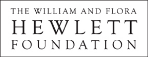
El número de obras con licencias CC casi se han triplicado en los últimos cinco años
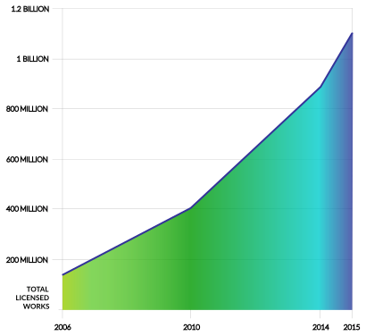
| _mil millones | |
|---|---|
| 140 millones | 2006 |
| 400 millones | 2010 |
| 882 millones | 2014 |
| 1.1 _mil millones | 2015 |
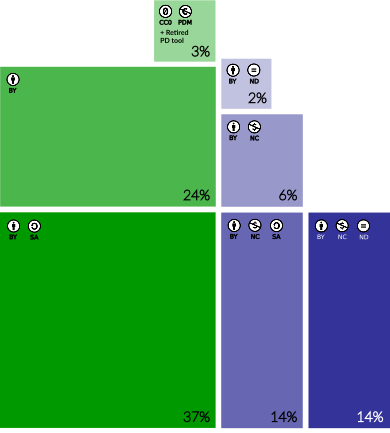
| CC0, PDM Herramienta del Dominio Pública retirada | 3% | Yes |
| CC BY | 24% | Yes |
| CC BY SA | 37% | Yes |
| CC BY ND | 2% | No |
| CC BY NC | 6% | No |
| CC BY-NC-SA | 14% | No |
| CC BY NC ND | 14% | No |
Más abierto — Más restrictivo. Las licencias de CULTURA LIBRE menos restrictivas permiten tanto usos comerciales como adaptaciones
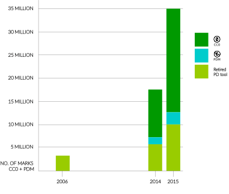
| Year | Herramienta del Dominio Pública retirada | PDM | CC0 | Total de obras con licencia |
|---|---|---|---|---|
| 2006 | 3.2 _millones | - | - | 3.2 _millones |
| 2014 | 5.7 _millones | 1.5 _millones | 10.3 _millones | 17.5 _millones |
| 2015 | 10 _millones | 2.6 _millones | 22.3 _millones | 34.9 _millones |
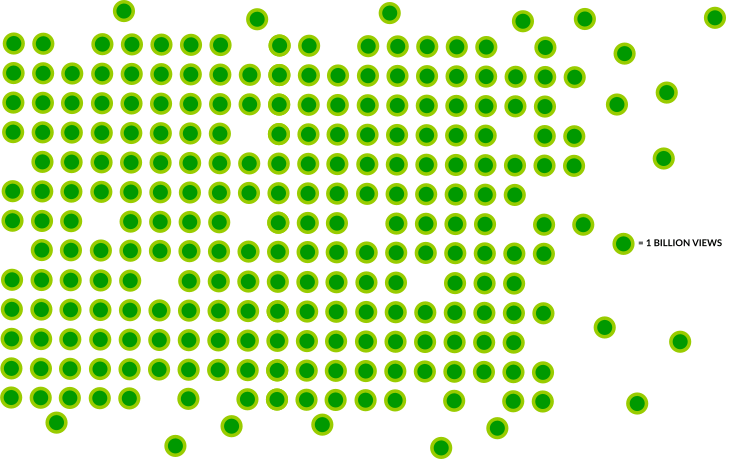
= 1 _mil millones
| (العربية) (Árabe) |
| беларускі (Bieloruso) |
| Català (Catalán) |
| 中国 (Chino*) |
| hrvatski (Croata) |
| čeština (Checo) |
| danske (Danés) |
| Nederlands (Neerlandés) |
| English (Inglés*) |
| Esperanton (Esperanto) |
| suomi (Finés) |
| français (Francés*) |
| galego (Gallego) |
| Deutsche (Alemán*) |
| ελληνικά (Griego) |
| Magyar (Húngaro) |
| bahasa Indones (Indonesio) |
| italiano (Italiano) |
| 日本語 (Japonés) |
| 한국어 (Coreano) |
| Latvijā (Letón) |
| Lietuvos (Lituano) |
| Melayu (Malayo) |
| te reo Maori (Maorí) |
| norsk (Noruego) |
| *فارسي (Persa (Farsi)) |
| polski (Polaco) |
| português (Portugués) |
| Română (Rumano) |
| Русский (Ruso) |
| Español (Español*) |
| svenska (Sueco) |
| Türk (Turco) |
| Український (Ucraniano) |
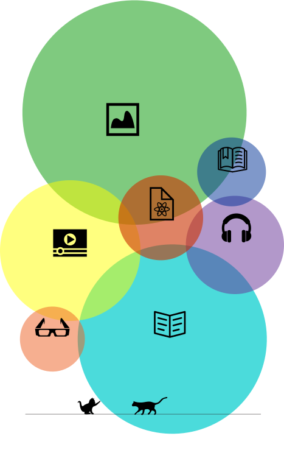
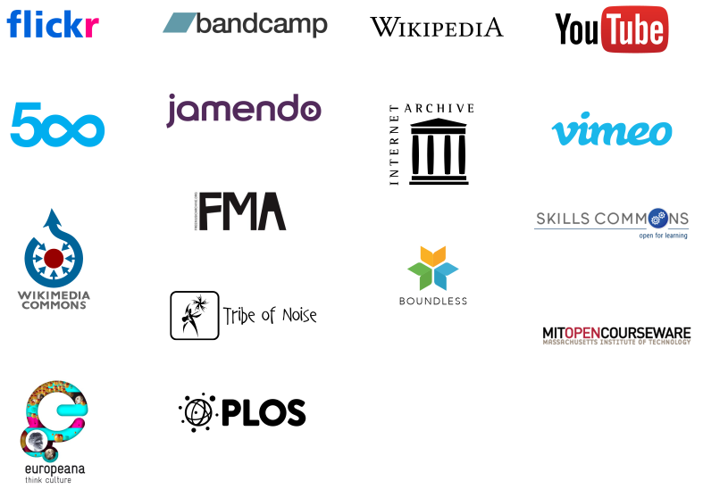
| - | Total de obras con licencia |
|---|---|
| Flickr | 356 millones de fotos |
| Bandcamp | 1,95 millones de pistas |
| Wikipedia | 35,9 millones de artículos |
| YouTube | |
| Jamendo | 496,000 _pistas |
| 500px | 661,000 photos |
| Vimeo | 5 _millones de vídeos |
| Internet Archive | 2 _millones de vídeos |
| FMA | 86,000 _pistas |
| Wikimedia Commons | 21.6 million media files |
| Tribe of Noise | 29,000 _pistas |
| PLOS | 140.000 artículos |
| Europeana | 20,9 millones de objetos digitales |
| Skills Commons | 24.000 materiales de formación académica |
| Boundless | 49,000 open educational resources |
| MIT opencourseware | 2.300 cursos |
(* (Total de artículos en acceso abierto en la web bajo icencia CC BY: 675.000; bajo cualquier licencia CC: 1,3 millones))
En 2015, más plataformas han añadido para sus usuarios la opción de escoger licencias CC, incluyendo Medium y edX, a la vez que Flickr ha añadido las opciones de CC0 y la marca de dominio público
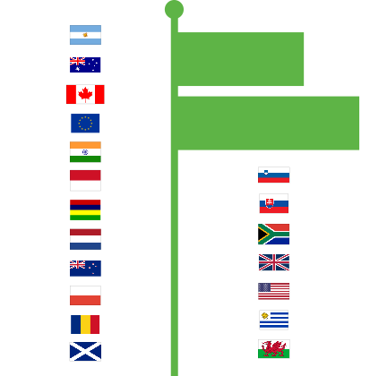
Educación en Abierto – Argentina, Australia , Canadá, Unión Europea, Indonesia , India, Países Bajos, Mauricio, Nueva Zelanda, Polonia, Rumania, Escocia, Eslovenia, Eslovaquia, Sudáfrica, Reino Unido, Estados Unidos, Uruguay, Gales.
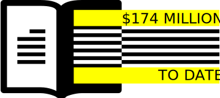
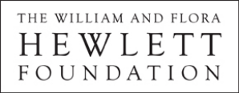
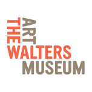
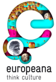

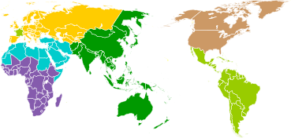
Los afiliados de CC del Medio Oriente y África del Norte se reúnen en dos encuentros históricos
Al Jazeera en inglés integra material interactivo e infografías bajo licencias CC de Al Jazeera Labs
Sudáfrica hace público los archivos de 17 años de actividad parlamentaria bajo la licencia CC BY
Los afiliados africanos de CC y WikiÁfrica lanzan la segunda campaña anual Wiki Ama a África
Los afiliados se unen con aliados locales, el Proyecto African Storybook y Book Dash para proporcionar libros para niños bajo licencias CC
“CC Portugal pone en marcha”“Manual CC para Negocios”“”
Los afiliados de CC a lo largo de Europa colaboran con los legisladores nacionales en la implementación de la Directiva de la Unión Europea en Gestión Colectiva de Derechos
CC Corea es la anfitriona de la Cumbre Global 2015 de Creative Commons en Seúl
Los afiliados de habla china están colaborando para preparar la traducción oficial del conjunto de licencias 4.0 a través de las diferentes culturas y zonas horarias
El Museo de Arte Moderno de Nueva York (MoMA) ha acogido el logo de CC en su colección permanente
Los beneficiarios del programa de formación acdémica del Departamento de Trabajo de los EE.UU. dotado con 2 mil millones de dólares han generado una primera ronda de recursos educativos abiertos
El programa de mini-becas de CC Latinoamérica, ahora en su segundo año, otorga fondos para impulsar nuevos proyectos de afiliados en El Salvador, Costa Rica, y Paraguay
CC Uruguay traduce el Manual de Open Licensing Policy
Conéctate a Creative Commons. Síguenos en Twitter y Facebook.